[11-2] W25Q64简介 — 学习笔记
一句话结论
W25Q64 是 SPI 接口的 NOR Flash，64Mbit＝8MB，掉电不丢失，可存数据、字库与固件（XIP）。写入前必须写使能并擦除，只能 1→0，一页最多 256 字节且不跨页，写完等 BUSY；读取无这些限制。
本集定位
- 模块 11 的理论课下集：全程 PPT（简介 / 硬件电路 / 框图 / Flash 操作注意事项）+ W25Q64BV 英文数据手册逐页精读，没有写一行代码。
- 内容路线：芯片简介 → 引脚与框图 → Flash 写入/读取的注意事项 → 手册的 FEATURES、状态寄存器、指令集、时序图、电气特性与封装。
- 片尾 48:00：「这就是这个手册的内容……（下一小节）开始写代码」——软件 SPI 代码在 [11-3]、硬件 SPI 在 [11-4]。
- 本集目标：把 W25Q64 的硬件细节与上一集的 SPI 知识点对上，下一集才写驱动。
1. W25Q64 是什么
1.1 系列与用途
- W25Qxx 系列：低成本、小型化、使用简单的非易失性存储器；W25Q64 是该系列 64Mbit=8MB 的那一颗（嫌大可换 W25Q32，操作方法一样）。
- 三种用途：数据存储（STM32 需要掉电保存的数据）、字库存储（字库存 Flash、用 SPI 读字模）、固件程序存储。
- 固件存储＝XIP（eXecute In Place，就地执行）：程序下载到外挂 Flash，芯片直接从 Flash 取指令运行，就像电脑的 BIOS 固件存在 W25Q 系列芯片里。
- 非易失性：掉电不丢；对比易失的 RAM，以及同为非易失但容量小的 E2PROM（如 AT24C02）。
- 接线简单：SPI 引脚少、协议简单，除 VCC/GND 外都是 GPIO，基本不需要其他电路。
1.2 存储介质：NOR Flash
- 存储介质是 NOR Flash（闪存）；闪存分 NOR Flash 与 NAND Flash 两类，各有优劣、适用领域不同，本芯片是 NOR。
1.3 时钟频率与 Dual/Quad SPI
- 普通 SPI 下 SCK 最大 80MHz；另有 160MHz（Dual SPI 等效）、320MHz（Quad SPI 等效），本课程不用。
- 为什么能翻倍：SPI 全双工，只发或只收时有一根数据线闲着——Dual SPI 让 MOSI 和 MISO 同时收发（一个时钟 2 位），Quad SPI 再把 WP、HOLD 当 IO2/IO3（4 位并行）；实际 SCK 上限仍是 80MHz。
- 代码意义：80MHz 远高于 GPIO 翻转速度，所以软件 SPI 完全不用加延时。
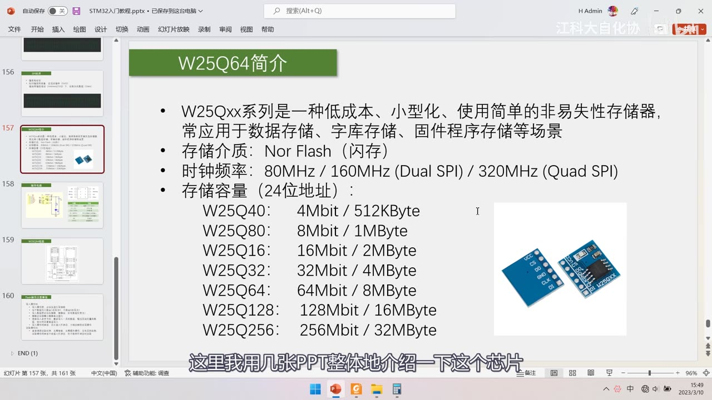
图 1：PPT「W25Q64简介」——W25Qxx 系列是一种低成本、小型化、使用简单的非易失性存储器，常用于数据存储、字库存储、固件程序存储等场景；存储介质 NOR Flash（闪存）；时钟频率 80MHz / 160MHz（Dual SPI）/ 320MHz（Quad SPI）；存储容量（24 位地址）：W25Q40 4Mbit/512KB、W25Q80 8Mbit/1MB、W25Q16 16Mbit/2MB、W25Q32 32Mbit/4MB、W25Q64 64Mbit/8MB、W25Q128 128Mbit/16MB、W25Q256 256Mbit/32MB；右侧是 W25Q64 模块实物；字幕「这里我用几张PPT整体地介绍一下这个芯片」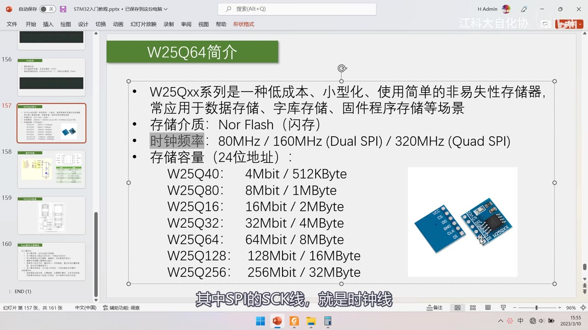
图 2：同页「时钟频率」一行被灰色高亮——80MHz / 160MHz（Dual SPI）/ 320MHz（Quad SPI）；字幕「其中SPI的SCK线，就是时钟线」1.4 容量换算与 24 位地址
- 1 字节＝8 位，所以 Mbit ÷ 8 ＝ MByte：4Mbit÷8=512KB、8Mbit÷8=1MB、16Mbit÷8=2MB、64Mbit÷8=8MB。
- 「24 位地址」＝3 个字节的地址：读写时要一次指定 3 个字节，才能定位到每个字节单元。
- 24 位地址最大寻址 2 的 24 次方＝16MB（2^24/1024/1024=16MB）。
- 所以 W25Q64（8MB）用 3 字节地址够用；W25Q256（32MB）只用 3 字节只能访问前 16MB，后 16MB 要改用 4 字节地址模式。
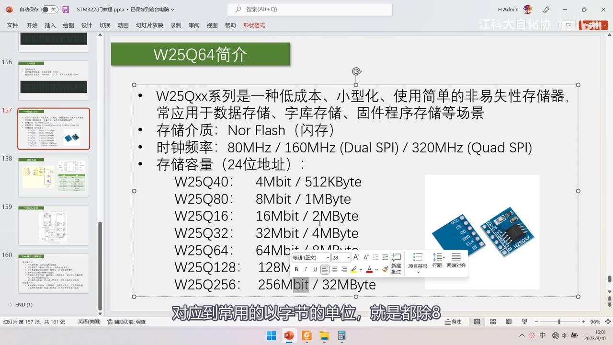
图 3：简介页 + 字幕「对应到常用的以字节的单位，就是都除8」——讲容量换算（Mbit÷8＝MByte）2. 引脚与硬件电路
2.1 引脚功能表
| 引脚 | 名称 | 功能 |
|---|---|---|
| 8、4 | VCC、GND | 电源：2.7～3.6V（典型 3.3V），不能直接接 5V |
| 1 | /CS（CS，chip select） | SPI 片选，对应上一集的 SS，低电平有效（画横线表示低有效） |
| 6 | CLK（SCK） | SPI 时钟 |
| 5 | DI（MOSI，IO0） | SPI 主机输出、从机输入 |
| 2 | DO（MISO，IO1） | SPI 主机输入、从机输出 |
| 3 | /WP（IO2） | 写保护：配合内部状态寄存器，接低电平保护（不能写）、接高电平正常 |
| 7 | /HOLD（IO3） | 数据保持，低电平有效：通信到一半被拉低可暂停当前时序，去操作总线上其他器件，之后再拉高继续原时序 |
- 引脚顺序要记牢：1=/CS、2=DO(IO1)、3=/WP(IO2)、4=GND、5=DI(IO0)、6=CLK、7=/HOLD(IO3)、8=VCC——和常见「1 脚 VCC」的芯片不同。
- 括号里的 IO0～IO3 只有 Dual/Quad SPI 才用（DI→IO0、DO→IO1、WP→IO2、HOLD→IO3），普通 SPI 不用看括号。
- 模块电路：J1 六脚排针引出 VCC/CS/DO/GND/CLK/DI，U1 为 W25QXX 芯片，C1（104）电源滤波、R1（1K）+ D1 电源指示灯；模块上 WP、HOLD 直接接 VCC（不启用）。
- 接线：GND 接 3.3V 电源，SPI 四根线直接接 STM32 的 GPIO。
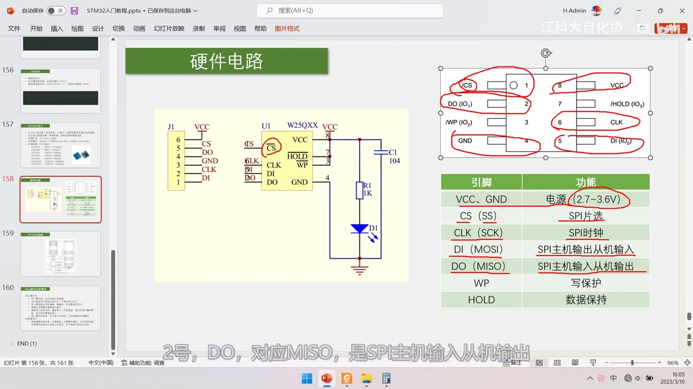
图 4：PPT「硬件电路」——左侧模块原理图（J1 六脚排针 VCC/CS/DO/GND/CLK/DI、U1 W25QXX、C1 104 滤波、R1 1K + D1 电源指示灯）；右侧引脚图（1 /CS、2 DO(IO1)、3 /WP(IO2)、4 GND、5 DI(IO0)、6 CLK、7 /HOLD(IO3)、8 VCC）；右下引脚功能表：VCC/GND 电源（2.7～3.6V）、CS(SS) SPI片选、CLK(SCK) SPI时钟、DI(MOSI) 主机输出从机输入、DO(MISO) 主机输入从机输出、WP 写保护、HOLD 数据保持；字幕「2号，DO，对应MISO，是SPI主机输出从机输出」3. 存储结构（框图）
3.1 空间划分
- 8MB 太大不便于管理，按层级划分：块 128 块 × 64KB（Block 0～127）、每块 16 个扇区 × 4KB（Sector 0～15）、每扇区 16 页 × 256B。
- 地址范围 0x000000～0x7FFFFF（最高字节是 7F 而不是 FF：24 位地址可寻址 16MB，本芯片只用前 8MB）。
- 块 0＝0x000000～0x00FFFF、块 31＝0x1F0000～0x1FFFFF（块 n 起始＝n×0x10000）；扇区 0＝0x000000～0x000FFF、扇区 15＝0x00F000～0x00FFFF。
- 页是直接对整个存储空间划分的，页大小 256 字节。
3.2 框图内部模块
- 引脚（CLK、/CS、DI、DO、/HOLD、/WP）→ SPI Control & Logic：自动操作内部电路。
- Write Control Logic + Status Register：状态寄存器体现 BUSY/WEL 等当前芯片状态。
- High Voltage Generators：擦写需要高压——比喻「烧 LED」：烧坏的永远坏（相当于写 1）、没烧坏的可继续烧（相当于写 0），且不受供电影响。
- Page / Byte Address Latch/Counter：接收主机发来的 24 位地址（前两字节进页地址计数器，剩下做字节地址）。
- Column Decode And 256-Byte Page Buffer：读写最终都经过这 256 字节 RAM 缓存。
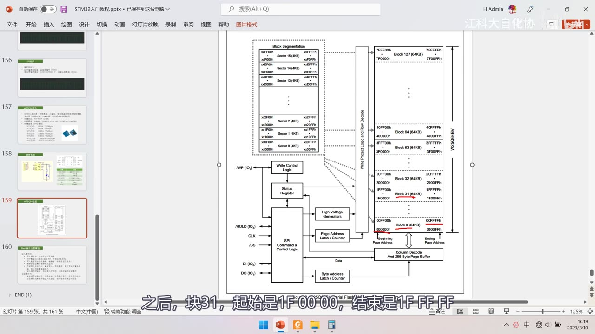
图 5：PPT「W25Q64框图」（手册 System Block Diagram）——右侧 W25Q64BV 存储空间：7FFFFFh～000000h、Block 0 (64KB) 000000h～00FFFFh … Block 127 (64KB) 7F0000h～7FFFFFh、Total 128 Blocks；左侧 Block Segmentation：Sector 0 (4KB) 0x000000～0x000FFF … Sector 15 (4KB) 0x00F000～0x00FFFF；中间 Write Control Logic/WP(IO2)、Status Register、High Voltage Generators、Page Address Latch/Counter、SPI Control & Logic（/HOLD(IO3)、CLK、/CS、DI(IO0)、DO(IO1)）、Byte Address Latch/Counter、Column Decode And 256-Byte Page Buffer；字幕「之后，块31，起始是1F 00 00，结束是1F FF FF」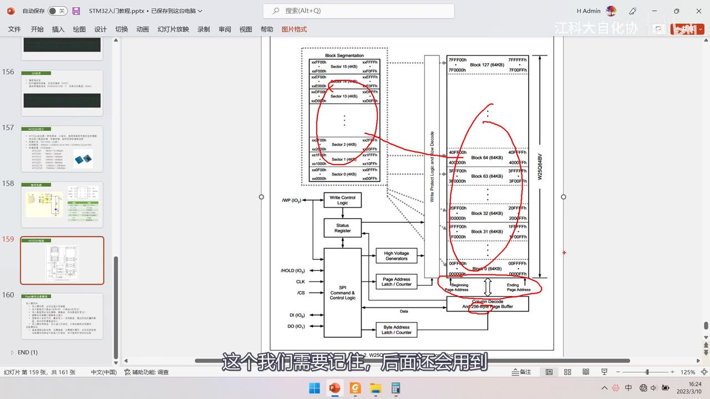
图 6：同一框图上的红笔——圈出左侧 Sector 0～15 的划分、右侧 Block 31/Block 0 的地址范围，以及下方「Column Decode And 256-Byte Page Buffer」；字幕「这个我们需要记住，后面还会用到」3.3 为什么要有页缓存
- SPI 总线的写入频率非常高，而 Flash 写入速度跟不上，所以数据先放 256 字节页缓存，芯片再慢慢搬进 Flash。
- 搬运期间 BUSY 置 1（芯片很忙），此时不响应新的读写；读取数据也经过缓存区。
4. Flash 操作注意事项（核心）
为什么不直接指定地址读写？因为 Flash 为了「掉电不丢失 + 大容量」在电路上做了取舍，读写不像 RAM 那样简单直接（RAM 可直接覆盖改写）。
4.1 写入操作的 6 条规定
- 写使能：写前必须先发写使能，是防误操作的保护措施（像手机锁屏）。
- 只能 1→0：每个数据位只能由 1 改写为 0，不能 0→1。例：存了 0xAA（10101010），再覆盖写 0x55（01010101），实际结果是 0x00；为什么这样，「只能说是成本原因」。
- 写前必须擦除：擦除后所有数据位变为 1（0xFF）；靠专门的擦除电路加高压完成，才能把 0 改回 1。
- 按最小擦除单元擦除：最小单元是扇区 4KB，也可选块擦除 64KB 或整片擦除；所以只想改一个字节，也要「读出整个扇区（4KB）→ 改 → 擦除扇区 → 把 4096 字节全写回」（或用备份扇区机制缓解）。
- 一次最多写一页（256 字节）：超过页尾的数据会回到页首覆盖写入，所以不能跨页写，否则地址错乱。
- 写完进入忙状态：不响应新的读写，要等 BUSY 位变 0 才能继续。
4.2 读取操作的 1 条规定
- 直接调用读取时序：无需使能、无需额外操作、没有页的限制、读完不进入忙状态。
- 唯一的限制：忙状态时不能读（先等 BUSY=0）。
- 结论：这些不方便都能用软件弥补，而容量大是 Flash 相对其他非易失性存储器的最大优势。
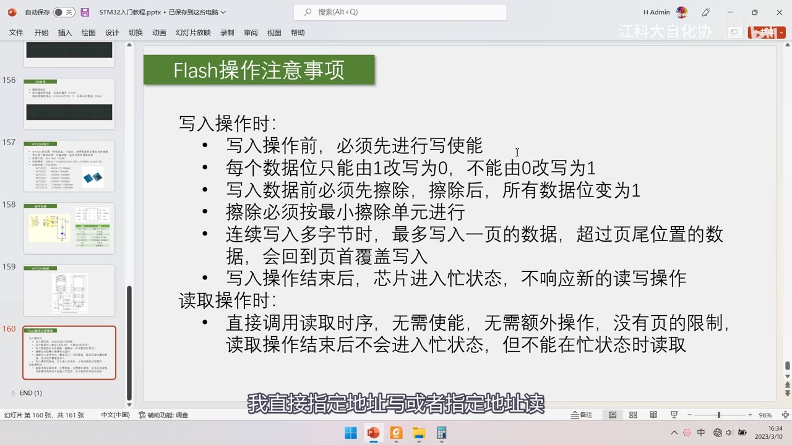
图 7：PPT「Flash操作注意事项」全页——写入操作时：①写前必须先写使能 ②每个数据位只能由 1 改写为 0，不能由 0 改写为 1 ③写入数据前必须先擦除，擦除后所有数据位变为 1 ④擦除必须按最小擦除单元进行 ⑤连续写入多字节时最多写入一页，超过页尾的数据会回到页首覆盖写入 ⑥写入结束后芯片进入忙状态，不响应新的读写操作；读取操作时：直接调用读取时序，无需使能、无需额外操作、没有页的限制，读取结束后不会进入忙状态，但不能在忙状态时读取；字幕「我直接指定地址写或者指定地址读」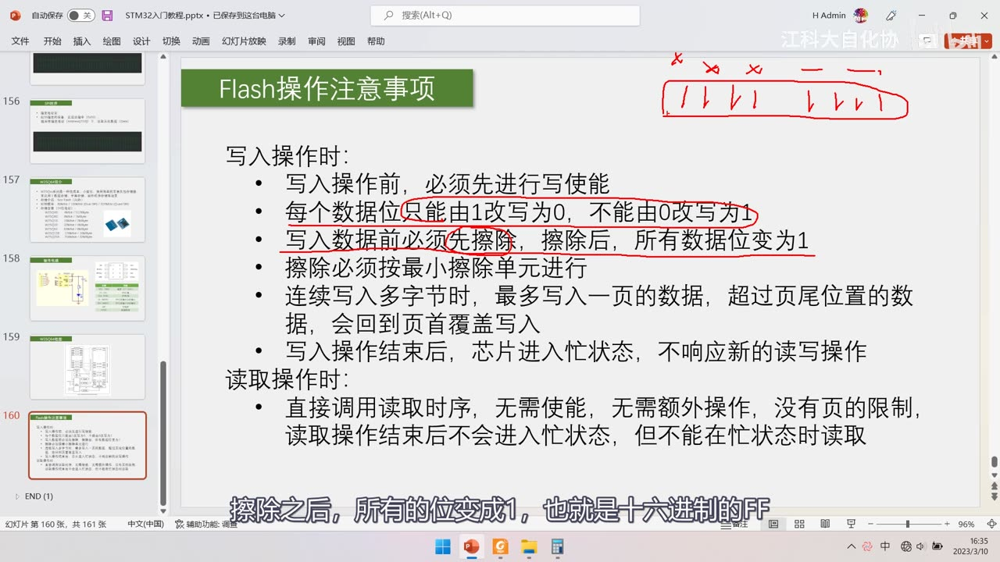
图 8：同页 + 红笔圈出「每个数据位只能由 1 改写为 0」「写入数据前必须先擦除」，右上角画了二进制位示意的红框；字幕「擦除之后，所有的位变成1，也就是十六进制的FF」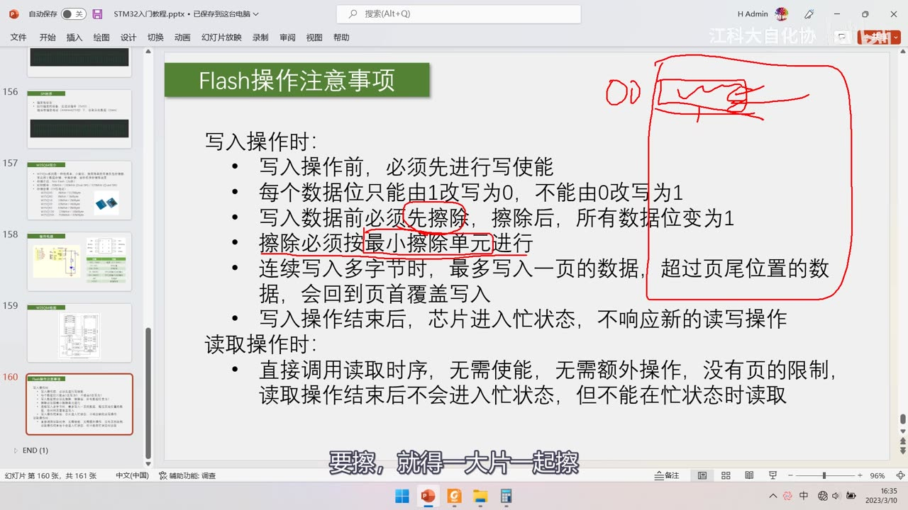
图 9：同页 + 红笔圈出「最大写入一页／超过页尾回到页首覆盖写入」整段，并在右上角写「DD」示意页回卷；字幕「要擦，就得一大片一起擦」5. 数据手册精读
手册 W25Q64BV（WINBOND）；本集精读 11.1 状态寄存器、11.2 指令集与 12/13 电气特性与封装。
5.1 2. FEATURES
- Spiflash Memories：W25Q64BV 64Mbit/8Mbyte（8,388,608 字节）、256 字节可编程页。
- Standard / Dual / Quad SPI：Standard（CLK、/CS、DI、DO、/WP、/Hold）、Dual（/WP、/Hold 可另用）、Quad（IO0～IO3）。
- 最高性能：80MHz 时钟、160MHz 等效 Dual、320MHz 等效 Quad、40MB/s 连续传输；读 24 位地址最多 8 个时钟 → 支持真正的 XIP。
- 低功耗宽温：供电 2.7～3.6V、4mA 工作电流、<1μA 掉电电流、−40～+85℃。
- 4KB 扇区架构：扇区擦除 4KB、块擦除 32KB/64KB、页编程 1～256 字节、10 万次擦写、20 年数据保存。
- 安全特性：软/硬件写保护、Lock-Down、OTP、每颗芯片 64 位唯一 ID；封装 8-pin SOIC 208-mil。
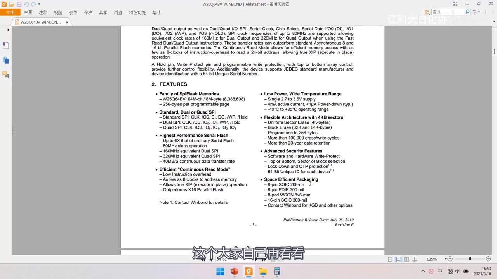
图 10：手册「2. FEATURES」（W25Q64BV WINBOND）——Spiflash Memories（W25Q64BV 64Mbit/8Mbyte（8,388,608）、256-byte programmable page）；Standard/Dual/Quad SPI 引脚；Highest Performance Serial Flash（80MHz、160MHz equivalent Dual、320MHz equivalent Quad、40MB/s）；Efficient "Continuous Read Mode"；Low Power/Wide Temperature Range（2.7～3.6V、4mA active、<1μA power-down、−40～+85℃）；Flexible Architecture with 4KB sectors（扇区擦除 4KB、块擦除 32K/64K、页编程 1～256 字节、10 万次擦写、20 年保存）；Advanced Security Features；Space Efficient Packaging；页脚 - 3 -、Publication Release Date: July 08, 2010；字幕「这个大家自己再看看」5.2 11.1 状态寄存器
- 状态寄存器有 SR1、SR2 两个，重点看 SR1。
- 11.1.1 BUSY（S0，只读）：页编程、扇区擦除、块擦除、整片擦除、写状态寄存器期间置 1，设备忽略进一步指令；完成后清 0。
- 11.1.2 WEL（Write Enable Latch，写使能锁存位，S1，只读）：执行写使能指令后置 1，代表芯片可以写入。
- WEL 清 0 的场合：写失能指令、上电、以及写状态寄存器/页编程/扇区擦除/块擦除/整片擦除完成之后——所以写完自动「关门」，不用手动写失能。
- 11.1.3 BP2/BP1/BP0、11.1.4 TB、11.1.5 SEC 是写保护相关位，了解即可；主要掌握最低两位（BUSY、WEL）。
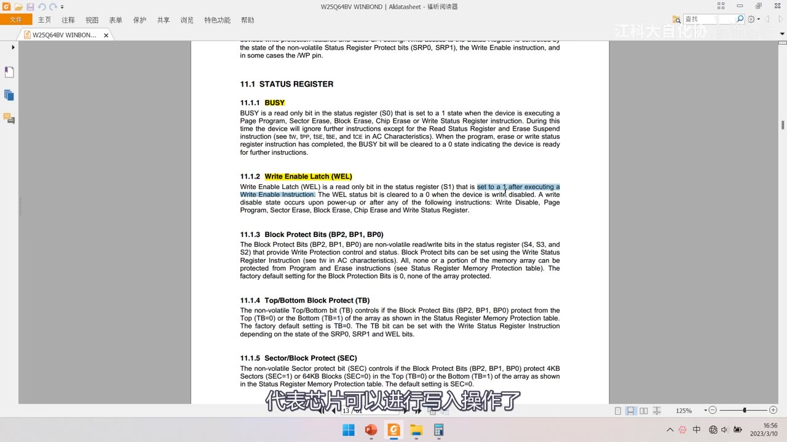
*图 11：手册「11.1 STATUS REGISTER」——11.1.1 BUSY（S0，只读；页编程/扇区擦除/块擦除/整片擦除/写状态寄存器期间置 1，完成后清 0）、11.1.2 Write Enable Latch（WEL）（S1，执行写使能指令后置 1；写失能、上电、写操作完成后清 0）、11.1.3 Block Protect Bits（BP2/BP1/BP0）、11.1.4 TB、11.1.5 SEC；字幕「代表芯片可以进行写入操作了」*5.3 11.2.2 指令集表
| 指令 | 指令码 | 说明 |
|---|---|---|
| Write Enable 写使能 | 0x06 | 置 WEL=1（每次写/擦前必须发） |
| Write Disable 写失能 | 0x04 | 清 WEL=0 |
| Read Status Register-1 读状态寄存器 1 | 0x05 | 后面返回 1 字节（S7～S0），用来看 BUSY/WEL |
| Read Status Register-2 | 0x35 | 读 SR2 |
| Write Status Register 写状态寄存器 | 0x01 | 写保护配置用 |
| Page Program 页编程 | 0x02 | + 24 位地址 + 数据（≤256 字节，不跨页） |
| Quad Page Program | 0x32 | Quad 模式页编程 |
| Block Erase 64KB 块擦除 | 0xD8 | +24 位地址 |
| Block Erase 32KB 块擦除 | 0x52 | +24 位地址 |
| Sector Erase 4KB 扇区擦除 | 0x20 | +24 位地址（最常用） |
| Chip Erase 整片擦除 | 0xC7 / 0x60 | 无参数 |
| Read Data 读数据 | 0x03 | +24 位地址，之后连续交换读取，无页限制 |
| Manufacturer/Device ID | 0x90 | 读厂商/设备 ID |
| JEDEC ID | 0x9F | 读 JEDEC 标准 ID（厂商 ID + 设备 ID） |
| Read Unique ID | 0x4B | 读 64 位唯一 ID |
| Power-down 掉电 | 0xB9 | 低功耗模式 |
- 操作流程与上一集完全一样：起始（CS 拉低）→ 交换 1 字节指令码 → 交换后续字节（地址/数据）→ 终止（CS 拉高）。
0x06写使能：单字节指令，DO 全程保持高阻。0x05读状态寄存器：交换完指令码后再交换 1 个字节即 S7～S0，S0=BUSY、S1=WEL；还可继续交换读 SR2。0x02页编程：指令码 + 24 位地址（A23～A16、A15～A8、A7～A0）+ 数据，最多 256 字节且不能跨页。0x20扇区擦除：指令码 + 24 位地址，擦除该地址所在扇区（4KB），比整片/块擦除更常用。0x9FJEDEC ID：返回厂商 ID + 设备 ID（下一节先用它验证芯片在不在）。- 其余指令码只需认表：
0x04写失能、0x01写状态寄存器、0x32Quad 页编程、0xD864KB 块擦除、0x5232KB 块擦除、0xC7/0x60整片擦除、0xB9掉电、0x90厂商/设备 ID、0x4B唯一 ID。
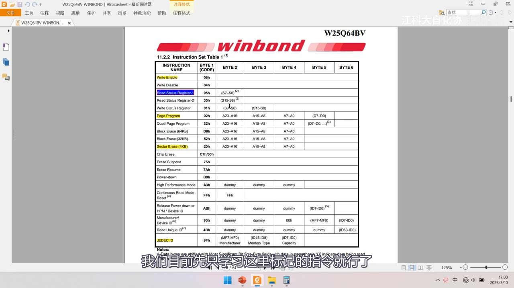
图 12：手册「11.2.2 Instruction Set Table 1」——Write Enable 06h、Write Disable 04h、Read Status Register-1 05h（S7-S0）、Read Status Register-2 35h、Write Status Register 01h、Page Program 02h（A23-A16 / A15-A8 / A7-A0 / D7-D0）、Quad Page Program 32h、Block Erase(64KB) D8h、Block Erase(32KB) 52h、Sector Erase(4KB) 20h、Chip Erase C7h/60h、Erase Suspend 75h、Erase Resume 7Ah、Power-down B9h、High Performance Mode A3h、Continuous Read Mode Reset FFh、Release Power-down/Device ID ABh、Manufacturer/Device ID 90h、Read Unique ID 4Bh、JEDEC ID 9Fh（MF7-MF0 / ID15-ID8 / ID7-ID0）；部分行有红/黄标注；字幕「我们目前先只学习这里标记的指令就行了」5.4 时序图：DO 高阻与模式 0/3 兼容
- 手册的指令时序图与上一集讲的基本一致，区别有两点：
- 只写指令阶段 DO（MISO）始终高阻（High Impedance）——从机没有数据回传，上拉后读到高电平。
- 手册标注 Mode 0 与 Mode 3：芯片兼容模式 0 和模式 3，两者都是「下降沿移出、上升沿移入」，所以可以在 SS 下降沿开始、之后都在 SCK 上升沿移入；虚线部分（两种模式的细微差别）可忽略。
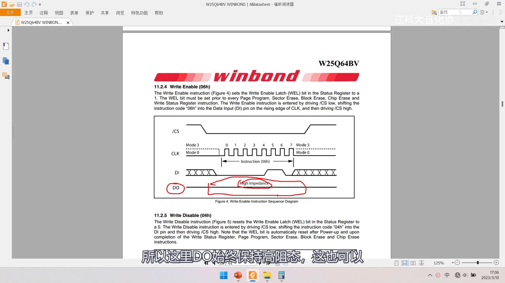
*图 13：手册「11.2.4 Write Enable (06h)」——说明写使能指令把 WEL 置 1（页编程/扇区擦除/块擦除/整片擦除/写状态寄存器之前必须写使能）；Figure 4 Write Enable Instruction Sequence Diagram：/CS（低）、CLK（标注 Mode 3 / Mode 0）、DI（0～7 位，Instruction 06h）、DO（红笔圈出 High Impedance 高阻）；下方 11.2.5 Write Disable (04h)；字幕「所以这里DO始终保持高阻态，这也可以」*5.5 电气特性与封装
- 电气特性给出供电电压范围（2.7～3.6V）等参数，必须在这个范围内。
- 时间参数：页编程 0.7ms（最大 3ms）、块擦除典型 120/150ms、整片擦除典型 15s（最大 30s）——Flash 的写入时间是 ms 级别。
- 13.1 8-Pin SOIC 208-mil（Package Code SS）：封装外形与毫米/英寸尺寸表。
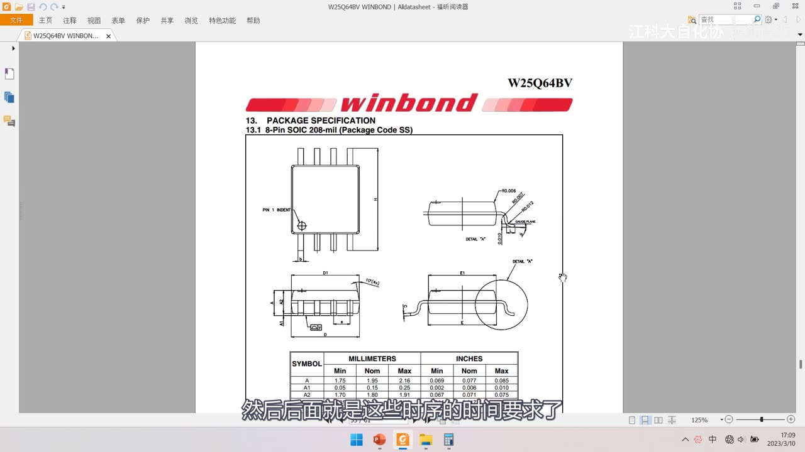
图 14：手册「13. PACKAGE SPECIFICATION / 13.1 8-Pin SOIC 208-mil（Package Code SS）」——8 脚 SOIC 封装外形图与毫米/英寸尺寸表；字幕「然后后面就是这些时序的时间要求了」坑与易错点
- 写之前必须先发
0x06写使能：否则写入/擦除无效，每次写/擦都要重新发。 - 只能 1→0、不能 0→1：
0xAA覆盖写0x55得0x00，必须先擦除。 - 擦除后是
0xFF：读到 FF 说明该处空白/已擦除，不是数据恰好是 FF。 - 最小擦除单元是扇区（4KB）：不能只擦一个字节，改一字节也要读整扇区再写回。
- 一次最多写一页（256B）且不能跨页：超页尾会回卷覆盖页首数据。
- 写入后要等 BUSY 清零：写/擦期间不响应新的读写，忙时也不能读。
- 读取不需要写使能：只读、无页限制，但要在 BUSY=0 时读。
- W25Q64 是 8MB（64Mbit）：别和 W25Q256 的 32MB 混淆，24 位地址只能寻址 16MB。
- 地址是 24 位＝3 个字节：
0x02/0x20/0x03后面都跟 3 字节地址（高位在前）。 - VCC 只能 2.7～3.6V：不能直接接 5V。
- CS 低有效、HOLD 低有效：接线和软件控制别搞反。
- 软件 SPI 不用加延时：SCK 最高 80MHz，GPIO 翻转远达不到。
- 兼容模式 0 与模式 3：两者都是下降沿移出、上升沿移入（本课程用模式 0）。
- 写使能指令的 DO 是高阻：不要期待它返回数据。